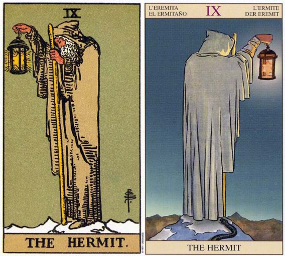

塔罗牌隐士解释
1.隐士牌暗示着：省思的一段时间。
2.隐者 THE HERMIT 暗示一段反省的时间，象征内心探索、及心灵上的引导，或者是由人帮助别人。逆位的代表孤单，要回到力量牌上找寻内在的力量。
3.隐士牌中没有明亮的色彩，这反而能让他看见生命中幽微的事物。他站在雪地中，一只手提着一盏有颗六角星星的灯，另一只手持着一根棍子。这星星包含了朝上及朝下的三角形，意味结合火和水元素的需要。
4.隐士需要独处以便反省。这张牌暗示自日常生活退隐，好让潜意识活跃起来。先行动，然后再来思索推敲那些行动是有用、哪些是浪费的。这将会让你对未来该如何行动，有一个清晰的理解。
5.隐士这张牌代表暂别外在的世界，以便唤醒内在的自我。你可以透过倾听自己的心声、梦想，或倾听朋友、咨商员、老师的话，来完成这件事情。
6.你的心智必须保持寂静，如此才能听得见内心的声音，要使心智如止水，你便要将干扰减到最低程度。因此你会有出走以保持独处的举动。这心智的安静让你窥见在高位的女教皇步幔后面的东西。
7.隐士是一张代表占星学中处女座的牌，一如宝剑皇后和五角星皇后，但象征意味比较没那么浓厚，还有其他五角星的宫廷牌。处女座必须学习的课题之一是：学习如何独处，而不感到寂寞。
8.隐士牌代表你自己走出去，冒点儿险，把一些平常的事物留在身后，去做你真正想要做的事情。由于灯笼的光线只能照短距离，所以谁也不能保证这会是一条正确的道路。隐士是形容对眼前事物的匆匆一瞥。它还是一张代表内在成功的牌，而这需要独自去经历一些事情。
9.隐士是指当你跟随你内在的召唤，离开某种再也无法满足你的情境。圣杯八带出了隐士，因为在圣杯八中，那人正独自走向山头，而现在在隐士牌当中，可以看见他站在绝顶上思索着他的人生和他自己。
塔罗牌隐士牌面故事
1.身穿灰色斗篷头戴帽子的老人站在冰天雪地的山巅上，低头沉思，四周渺无人烟。他右手高高举着一盏灯，这是真理之灯，灯里是颗发亮的六角星，名称是所罗门的封印，散发出潜意识之光。老人左手拄着一根族长之杖，这根杖在愚人、魔术师、战车都曾经出现过，愚人太过天真，不知杖的魔力，拿它来系包袱；魔术师用代表意识的右手运用杖的法力；战车把杖化为矛，也用右手紧握着；隐士则杖交左手，用以在启蒙之路上做向导。
2.隐士和愚人同样都站在悬崖顶，愚人大踏步的向前走，隐士却十分谨慎。隐士是成长之后的愚人，他花白的胡子似乎在告诉我们：“我年纪大了，不再是从前那个浑小子了。”的确，在累积足够经验与智慧之后，隐士自然行事谨慎。与隐士相关的星座是处女座，是注重细节的完美主义者，做事总是小心翼翼，这正是隐士的写照。
塔罗牌隐士档案
1.相关词：谨慎、孤独、内省、探索
2.对应占星：海王星
3.对应人物：Cronos
4.四元素：土元素
5.对应星座：处女座
6.加强牌：女祭司、圣杯四、宝剑四、宝剑七
7. 每月27日 - 隐士，塔罗牌大阿卡那的第9张是“隐士”，他提着一盏灯、拄着拐杖，代表冥想、孤立与寂静，象征智慧的结晶及绝对的纪律。隐士是严厉的导师，他运用良心使 人走上正途。牌面正立时，代表有所坚持、有目标、深沉且专注。牌面倒立表示专断、不易原谅他人、多疑以及气馁。
8.相关传说：黄金时代的 开创者，Uranus（天神）和Gaea（地母）之子。Zeus，Hera，Demeter，Hades，Poseidon，Hestia六人之父。 Chaos生出Gaea和Uranus，他们生下许多兄弟姊妹，叫Titan族。Cronos是最年轻的。由于长相太丑，被Uranus关在地府。为 Gaea所救，并夺走Uranus的统治权。和姊姊Rhea结婚。听到谣言说孩子将会取而代之，吞食自己的孩子。希腊语Cronos和时间谐音。
塔罗牌隐士牌面解释
1.解读一
求道者背后有一双白色巨大的翅膀， 真正的隐者不会执着于自己狭窄的理论， 应该是拥有天使之翼，在世俗中翱翔。 套一句现代的话，就是心灵改革。
2.解读二
此牌又称追求者。 [激情塔罗] 有些牌的灯是被斗篷遮住一部份。
3.解读三
他是个智者，在黑暗中提着一盏灯，左手持手杖， 远离世俗的喧哗，一心一意追求真理。 灯是在牌的左侧，从自己的脚照起，隐者便是保护这智慧之灯的人。 灯里有一颗星星( 希望) ，隐者带着希望，到处寻找真理。 灯里带着神秘玄奥的科学，而他的材料是手上的权杖( 生命树) 。
4.解读四
灰色斗篷和头巾，白色的胡子代表智慧与成熟。 灯中的光芒是上帝的光。 积雪的山峰代表纯净的思想需经由智慧和经验获取。
5.隐士身着长袍，提着一盏灯、拄着拐杖，在黑暗中孤独地摸索前进。这张牌代表独处，隐士试图放弃外在的诱惑，而达到内心的平静，进而在寂静的环境里通过冥想得到真理。寂静中只能听 到自己内心发出的声音，所以才能够更好地理解自己的想法，寻找到一个真正属于自我的最终目标。
6.解牌时应当注意隐士的特点，仔细查看面前的牌型，解释前再检查一遍，是否有某个细节被无意间遗漏了。
7.隐士象征秋天的开始，秋收冬藏的起步。此时正是拿起照妖镜自我探视的良机，彻底挖掘内在隐藏的私语，任何外在的干扰，一盖不予理会，专注再专注，直到黎明破晓的征兆自动浮现。没错，自我疗愈，是眼前最严酷的课题。黑暗不会凝固胶着，除非，你不愿意看见阳光。
8.通常生日塔罗中若有此牌，则表示此人定力过人，否则，必然是退缩的推托性格，难以承载大任，要看搭配的牌阵，来做出适切的判断。不过，通常能拥有这张牌，都早已心知肚明，自己是属于哪一类。
9.隐士牌的主宰星是处女座Virgo，生命元素属地，非常符合而贴切的稳定性格。孤独、遗世独立、深谋远虑而谨慎，是非常可靠的灵魂伴侣。
10.正面的隐士牌乐观进取，虽低调行事，却有着非常阳光的期待，随时等着补充能量过后再出发；来自四面八方的拥戴者，赋予无穷的能量与支持，开启全然阳光而愉悦的心情，是平时累积的声誉所带来的成就；反面的隐士，则自私自利，且需要不断地被取悦，经常处于黑暗孤独无依的状态，必须挑战自我懦弱的恐惧。
11.与处女座连结，代表着无私的服务工作，与司掌中阴界的智慧女神Hecate是一体两面的化身。正面代表刚刚完成圆满的探索之旅，即将进入内化而清晰开悟的过程，等待是智慧的明灯；反面则处于退化又退缩的瓶颈，毫无伴侣的长期孤独状态，让自己失去了宁静，若有人出现，必然出于自私而短暂的依赖，却能藉此学习奉献服务的课题。
12.此时当充份消化毕生吸收的智慧财产，等待恰当时刻，顺应时机付诸实践。巩固内在的信念，是当下的必要磐石。虽处于孤寂，却恰好是休养生息的必要阶段，慢慢习惯跟自己好好相处，而达到自我成长与体悟的精神丰收状态，重新看待自己的生命课题，逐渐找到出发的方向。此时最需要的伴侣，不论男女，都要有不任意批判的开阔心胸，才能彼此启发内在的智慧奥秘。
13.隐士象征秋天的开始，秋收冬藏的起步。心境虽处于静止的状态，一开始是享受，旷时日久，逐渐孳生自我怀疑与不确定的孤寂，此时正是拿起照妖镜自我探视的良机，彻底挖掘内在隐藏的私语，任何外在的干扰，一盖不予理会，专注再专注，直到黎明破晓的征兆自动浮现。没错，自我疗愈，是眼前最严酷的课题。黑暗不会凝固胶着，除非，你不愿意看见阳光。
塔罗牌隐士牌义解释
1.隐士孤身一人在山巅，在追寻智慧与心灵成长的过程中，爬得越高就越孤独。隐士脚踩的山头都结冰了，或许真是高处不胜寒。追寻的过程中，他不与群众接触，只与自己的内心接触。智慧的追寻和心灵成长，都必须一个人单独完成。离群索居是必要的过程。因此，在预测上，隐士代表孤独。他远离人群，退出交际活动，让内心静下来，一个人独处。此时应暂时放下社交活动，向内探求，留一些时间给自己。冥想、沉思、静坐、倾听内心的声音、留意梦境带来的讯息，都会带来好处。问题的答案其实已经在我们的心中，孤独是为了内省，内省就是为了找出答案。
经过一段时间的内省之后，隐士已然到达智慧的顶峰，这时他准备返回人群，为山下的人指引方向。他高举着真理之灯，犹如一座灯塔。他亲身经历过追寻的过程，现在可以为大众启蒙、引路了。隐士不是经师，他不真的教授书本的知识，他要当的是人师，是每个人的心灵导师。他深知灵性与智慧的探求无法靠口头传授，必须由学生自己经历体会，方能真正获得。他站在山顶指引还在山下的学生，帮助他们，扮演领路人的角色。
2.隐士是智慧老人的原型，他代表心灵导师、教师、有智慧的人、长者、咨商师、顾问、前辈、当然也代表隐士。预测上，隐士出来表示孤独和内省的需要之外，也建议当事人博学的前辈请教。感情方面可能表示单身，或是暂时退出感情关系，需要深思。如果已经处在稳定关系中，也暗示他需要自己的时间和空间，或是对此关系作进一步的思索。毕竟，隐士对于恋爱并不热衷。
塔罗牌隐士解牌参考
正位
1．有独立思考的能力，可以为别人提供有用的建议的人。
2．需要更多的私人空间。
3．沉着，冷静，思维周密。
4．对周围的情况保持着警惕心。
5．独处。单身，对感情放弃，更愿意退出这种关系。或者对感情深藏不露。
6．渊博的知识，很有份量的见底。
逆位
1．失去了谨慎，操之过急。
2．钻牛角尖，无法听从别人的建议。认死理。
3．不正确的建议。
4．孤僻，不愿意和人来往，人际关系有欠沟通。
5．浮躁的爱情，不追求心灵结合的恋情。或者在恋情前却步。
6．远离真理。内心焦躁不安。
塔罗牌隐士正位释义
1.健康生活：情绪比较平和、天然的食物非常有益于健康。
2.恋爱婚姻：暗恋、追求精神层次的结合、永久的恋情、值得信赖的对象、理性的爱恋。
3.人际财富：开源节流、有自知之明、以礼待人、因内敛从而受人信赖、容易相信忠言。
4.工作学业：努力奋斗一定会成功、拟订长期计划、注重细节、有特别棒的分析能力、追求稳定的工作状态、获得正确的检验、勤勉、遵守规则、一板一眼。
5.其他：书法、对弈、拟定计划、郊游、写日记。
6.基本含义：自信、特别的理智、非常的踏实、不喜形于色、中肯的建议、坚持不懈、沉着冷静、闭门静思养精蓄锐。
7.高度智慧、思虑周密、冷静寡言、追求高层次的事物、正中要害、渐入佳境、出局、追求柏拉图式恋情、单相思
8.当牌面倒立时，在事业中过多的投入已经让你不愿面对其它事情，因而事业有了突破性的进展。在感情方面，用工作繁忙来逃避这段感情的发展，对伴侣态度冷淡，因为害怕感情的发展而在关键时刻退缩，使对方心寒。
塔罗牌隐士逆位释义
1.健康生活：神经质、过于紧张会引发肠胃不适、气色较差。
2.恋爱婚姻：保守、多疑、自闭、孤寂、轻浮的恋情、对爱人十分刻薄、缺乏告白的勇气。
3.人际财富：无畏的开销、不懂得节制、对旁人缺乏信任感、互相猜疑、受自卑困扰、孤僻、容易和朋友闹别扭。
4.工作学业：多疑焦虑、因注意力不够集中而错误百出、实力无法正常发挥、自卑、考试不顺利、因嫉妒肆意贬低他人。
5.其他：多愁善感、喜爱独处、逃避、自虐、心胸狭隘、追逐小利。
6.基本含义：口无遮拦、十分俗气、有些神经质、为人刻薄、行事不够理智、多疑。
7.工作狂、铁面无私、偏见、有怨言、不够通融、孤独、固执、戒备心强、迷失方向、举止轻浮、怀疑和逃避爱情
8.当牌面正立时，你在事业的黄金时期引退，旁人都不了解，这不过是你在为下一次黄金时期的到来进行休息而已。感情方面你将深刻思考自己在这段感情中的角色和地位，并探索彼此之间的关系。
塔罗牌解释倒立的隐士
1.倒立的隐士牌有两种可能性。第一，你可能是故意让自己忙的团团转，以免面对改变的要求，或面对你确实是很寂寞这个事实。因此这里暗示着过长的工作时间，或违反朝九晚五的工作时间。为了避免和别人有真正的社交接触，你可能会在晚上或周末工作，以填满你的社交时间。例如，萝蓓卡白天在一家广告代理商担任接待的工作，而为了要填补夜晚寂寥的时光，她每周有四个晚上在一家旅馆的大厅酒吧工作。这让他不会感到寂寥，但也组织了她向内心的探求，以找出她真正的目的。
2.可能你需要再回到力量牌，再你愿意让别人亲近你之前，你要先找出你的内在力量。现在已经到了要停下脚步，并思索你要走向何处，以及为什么要走那条路的时候了。或许你为了要避免孤独，正要向平凡屈服;或者因为害怕孤单，或害怕你可能要放弃某些东西，所以宁愿选择安逸而不愿成长。
塔罗牌隐士大体上的意义
1.隐士牌暗示一段反省的时间。它代表着一段想要让你的过去、现在，以及未来成为有意义的时间。这张牌代表去看咨商辅导员、持续一段梦想之旅，或为了开发你自己的沉思。它也代表成熟，以及你已经知道生命中真正重要的是什么。
2.它可能意味着得到身体或心灵上的协助及智因;或是你帮助其他人发现人生理解及事件的导因。它也代表一段时间内，你会问自己如下的问题：我从何处来?我现在位于何处?又将往何处去?
塔罗牌隐士两性关系上的意义
1.隐士可能象征着向内心探索的需求，暂时自一个两性关系中退出，以决定你想要什么、要往哪里去。或许你正用了比平常更多的时间来疏远两性关系，而将思想更集中于自己身上。
2.可能你正在协助伴侣，让他(她)对他(她)自己，和他(她)的人生有跟深刻体会。它也可能单纯智某个处女座的人。当隐士牌出现在两性关系的分析中，代表你更加清楚在某段两性关系中你的独立性，或是注意到你需要独处，以面对你的内在需求。
塔罗牌隐士事业
正位
虽然表面上来看，这是一份很普通的工作，它似乎并没有什么特殊的地方，并且在工作中一切都那么简单正常，就像普通工作一般，稳定，慢慢的等待升迁又或者离职。但其实在你的这份工作中如果你仔细观察，期间是会有很多不错的机会的，而你只要能把握住这些机会，是有很大的概率一夜飙升的哦！其实你本人也是属于喜欢默默付出行动的人，其实偶尔的别那么隐秘也会让你更快获得领导赏识。
逆位
这并不是一份简单的工作，整体来讲它也并不是你能够很好的胜任和处理的，在工作中你得注意把握好度，该出风头的时候你不能缩起来，该低调的时候必须低调好。并且这份工作对你来讲要做好并不那么容易，有很多隐性的问题是需要你去处理和解决的，一旦没处理好甚至有可能导致你在这里干不下去。
塔罗牌隐士爱情
正位
1.你们的感情现阶段还算比较模糊，虽然可能双方有一定接触了，但其实对方绝不是你所看到的那样，而你们的感情发展，你们的关系也绝对没有标明上现实的那么简单。你们的关系在未来也并不会那么好走，你首先需要找到“一盏灯”一个明晰的方向，然后才好按着方向前进。对你来讲你们的感情关系在短期内可能很难有太大的进步发展，但如果你在未来里能找到那个给予你们感情帮助的人，那么会有很大的改变。
2.对人感情的想法：在你/他看来，对方是个很神秘的家伙，其心理的想法总是让人无法摸透无法显现。或许是双方接触的还不够多，也或许是藏得比较深，至少现阶段你/他对对方还是比较迷茫并且充满了一定好奇的。
3.建议：对于你们的关系，还需要进一步发展和接触才能下定论。发展到现在的程度并不容易，所以更建议是再坚持一下好好走下去，或许柳暗花明又一村也不一定。希望和机会并不一定会送到你的面前，如果你对他有喜欢，那么就先继续再说。
逆位
1.现阶段你们的关系有点忽明忽暗，或许在你们的相处中很多时候都有点一意孤行的意味，缺乏了相互取暖与沟通，又缺乏人指引或者你们双方根本不听他人的意见，使得你们的关系发展到现在已经是很冷淡又步履艰难了。如果继续这样发展下去不进行调整和改变，等待你们的只有慢慢的淡到最浅而结束。
2.对人感情的想法：在你/他看来，对方是个有些孤僻的人，朋友很少，又不喜欢说话，总是喜欢一个人发呆。生活有点懒，而且有些时候还有点固执听不进劝。不得不说面对这样的一个人你/他还是觉得蛮辛苦的。
3.建议：是时候需要走出自己的小世界去接触和面对外面了，至少你需要走出来和你的另一半和他有更多的接触。你需要开始学着敞开心扉，别习惯性将自己隐藏起来，又或者将真实的隐藏吧虚假的一面暴露，这只会让他感觉不到你的真心，只会让他更远离你。
塔罗牌隐士在工作方面的启示
1.隐士象征从外在世界撤退向内心求索的人。
2.每个人都有所求，佛经说人有八大苦，其中包括“求不得苦”。设定目标多了，打仗多了，总有达不到目标、吃不了胜仗的时候。这时候，检讨、反省、调整、内部整修、韬光养晦，都是对的。有高人说：“受伤的残鱼，越想挣扎浮上来，越会露出败相，变成牺牲品。受伤后又能沉下去的鱼，才有保命的机会。”他会愿意接受命运的教训，给自己放一个长长的假，不一定是实质的放假，而是心灵的休息。检讨可能不会一下子有结论——越大的挫败也越不宜有快速的结论。这时候，正好从事学习之旅。请教高手、闭门读书、出国进修——有的人的学习之旅是真的，那么收获也就会是真的，再出发时容光焕发，目光坚定，气象一新。有的人的学习之旅是假的，是做给别人看的，向外界的道歉也是不得不然，内心其实依然不服气，不认输。这种人根本没找到失败之钥，没喝下经验的智能苦酒。
3.隐士牌教人的是“阴”的哲学，是处在暗处还能“暧暧内含光”的哲学。这一关过得了，功力又高一层，就像坠崖的男主角遇上栖身谷底的怪老头，没死，反而学了一身旷世武功。
4.现代隐士不一定有缘遇上怪老师，但也许自己就是那真正的老师？这时候，正好适合看看前面一路走来，轻忽了什么？自己的能量是否不具备应付自己的目标？或者，时局变了，心态变了，根本已经该变换目标？很多人平时灵活善变，很能在乱中指挥若定；但是真正遇到事业或人生的大挫败或大瓶颈时，这种手腕和聪明就不敷使用了——他不是不会变，是不知道该怎么变、往哪里变。
5.隐士牌教的也是“忍”的哲学。忍受变局中的过渡，忍受风光不再的落寞，忍受焦虑与彷徨的暂时无解，要忍人所不能忍，思过往的自己所不能忍，才能突破，才能造就“士别三日刮目相看”的新我。这时万万不宜躁进，不宜抓住什么是什么。让自己静一静，你逞强太久了。当然，如果你沉溺于失败的阴影，躲在洞穴不肯出来，就此一蹶不振或愤世嫉俗，那又不是健康的隐士所当为的了。隐士的“隐”是为了“破而后立”。
塔罗牌隐士图案占卜应用
1.隐士可说是「谨慎」这个特质的代表，因此不乏谨慎，慎重和周到等特质。他擅长深思熟虑，因而下决定并不会很明快，更不用说行动力的缓慢了。然而一旦做了决定，对一件事情的态度，总是坚持到底、夙夜匪懈，这是对一种生命的坚持态度。
2.由於隐士是以年老的人为象徵，说明了这张牌占算时所代表的是年老的人，也有可能是这样心境的人。有关於一些年老的特质都存在着。在事件上可能因年老而德高望重，受到他人尊敬，得到肯定和名望。他面临凡事都处之泰然，神情若定，老神在在。
3.因为隐士就是明智的智者，所以是一个代表智慧的牌，多半会提供智囊和策略，而这些智慧是隐藏人生道理和实际功效的。所以隐士一般都能当作我们的专业顾问，这也是占算是向上的运用之一。睿智的长者，总是喜欢进言，他有可能的进展动作，就是商劝谘询，提供知识和经验。隐士也是代表给予他人明智的劝告与警惕的一张牌。
4.隐士手上拿着长的法杖，这就是隐士能力的象徵。他的经验值丰富，遇到事情一下就能上手，掌控整个局面，请他策划、谋略和解难，都是很有助益的，尤其是临危授命，更能就急於千钧一发，只是对他需要保持尊重和虚心求教的态度。隐士倚抱着权杖，那是他的毕生法力之所注，也代表他珍惜和自恃非凡的能力，更说明了他缅怀自己的过往云烟，并仍抱持着施展长才的心愿。
5.隐士的身姿是低头思索的，也是代表向内探索、思考和思索，具有内省和自我观照的能力。也因此他会非常理智，对事态看得很清楚，而本身的立场则非常坚定。他的眼力很好，能够仔细观察关照，甚至并非运用双眼而是用心观照来面对世间，无论思绪和感觉都非常敏锐。
6.隐士提着灯，也可以是一种心愿的追寻，这种追寻探索，对自身往内在发展有极大的帮助。隐士寻找失去着真理，代表能寻找重要的关键。而也能代表寻找的举动，尤其是占算寻找失物和寻人的很重要的一张牌。正位置的隐士，通常有希望找到。这样的姿态表明了一种，寻找希望与回忆。有所追寻，和寄托。六芒星灯代表的寓意深远，隐士将内心的希望投注在灯上。六芒星是他内心和修为的凝聚，亮出光芒，也有义无反顾投注最後生命的意味。
7.然而，隐士老年的特色与缺点会存在，这张牌也常显示陷入一种退缩、停止的状态，不够积极。由於习惯於想清楚再说，凡事先慢慢来，也可说是犹豫不前的象徵。隐士这样的消极面，多半是自我否定，退缩，退却的特质。这是对於有些不得不进行的事，有可能会取消约定，遇事有可能会反悔，只因为当初没有下定决心，反持失去他一贯作风～坚持度，店成犹豫、吹毛求疵的象徵。
8.另一方面来说，这张牌也代表一种忧郁、阴郁的情绪，连同背景也是黯淡阴霾，无疑陷入了消极悲观的思想当中。这个孤绝身影画面的情节，也让我们不禁联想到，就好像半夜睡不着觉，起来找灯火，因此有时候也是夜晚失眠的意思，或者是忧怀悲戚，或者是挂念惦记。
9.阴暗无光的场景，显示出环境的时不我予，在这种昏暗的景色之中，隐士的身影难见，几乎融入背景当中。在人世间的样貌，虚无的存在感。隐士习於藏身在黑暗中，也代表躲起来，或许暗示着隐居、退休的生活，退居山林，对以往所从事的事物金盆洗手。
10.这张牌在占算感情的时後，显示出较为不利的影响：因为年纪老迈象徵对感情较失去兴趣，而情绪显得忧郁冷淡，性格也是忘情。而且多半有隐藏感情的倾向，害怕被发现内心真正的感觉，又因为有退缩的特性，而且修道已久，并且又真的很老年，这些现象都代表不适宜谈恋爱。
11.因此可见，这张牌对人际关系也没有帮助，不是很喜欢人打交道，更可能有点自闭。这张牌对钱也没帮助，世俗的获取列夺竞争，都不是有利的。然而对於拥有内在智慧，对於精神方面很有帮助，表示了气度和修养。对长远的学业培养很有帮助。
12.隐士有可能的最大缺点是：有时候会以掩饰或是装糊涂的方式，不然就是倚老卖老，甚至以机诈的方式恶作剧。有时候也会因循敷衍、腐败堕落，或许是由於他的年老而易於疲惫吧！
塔罗牌隐士(伟特塔罗篇)
1.伟特牌中的隐士是以马赛塔罗为蓝图而作，除了隐士人物身上暗色的斗篷与风帽，斗篷与风帽这一符号加强了隐士独处与沉思的心境。同时，隐士位于高山之颠，说明他已经掌握了上一张大牌所表达的美德并达到了高层的顶端，伟特隐士的图像同样也受到Hermetic博物馆中的一副图的影响，在该书首页有一副画着一位炼金术士的图，这位炼金术士身着长袍、手持木棍和灯笼，跟随着象征AnimaMundi(世界灵魂)的美丽女子，这名女子手持发光的六芒星，而在伟特塔罗的隐士中的六芒星符号则出现在灯笼的光芒。隐士代表了远离人群的独处，为的是冥想与获得精神上的启迪，也可以代表一种脱离群体、脱离组织的一种独立状态，同时隐士也是一位为他人点亮道路的先驱与明灯。
2.最后，隐士的数字序号为9，9是个位数中的最后一个整数，代表完成、实现与达成。由于9是3的平方，所以9也是一个神圣的数字。如果说数字7代表的是人类物质方面的完成，那么数字9则是精神方面的完成。因此，数字9自然而然的能和第九张塔罗牌隐士的寓意相匹配。
塔罗牌隐士(古塔罗篇)
1.塔罗大牌牌组的第二部分讲述的是意志的灵魂，强调苦行主义，所以马赛塔罗的第九张出现的是隐士牌并不奇怪。这里的隐士是基督徒修士。隐士牌已知最早的形象出现在米兰的手工牌上，说的是一个手持时间沙漏的老人，这个符号象征的是时间。
2.在说到前一张牌的正义时，我们说到正义牌中人物的形象来源于狄克，那么这里，隐士牌其时间的象征人物则是源于Saturn(萨杜恩)——罗马的时间之神。这位时间的化身者经常与命运之神与死神一同出现于文艺复兴的艺术画中，而塔罗中，命运与死亡则一同与隐士出现在塔罗结构的第二部分(8－14)。
3.在讲述隐士牌之前，先作一个扩展了解，了解一下文艺复兴时期与“塔罗主题”和“时间之神萨杜恩”有关的艺术作品——尼德兰地区最伟大的画家PieterBrueghel(彼得·勃鲁盖尔1525-1569)的“Triumph of Time”：
4.Triumph ofTime的原作完成于1574年，当时勃鲁盖尔已经去世5年了，是由一位雕刻师根据勃鲁盖尔的绘画所做。在绘画的下方标着拉丁文的标题，翻译成英语就是TimeDevouring all andeach(时间吞没一切)。在图中，我可以找到与塔罗大牌所表达的内涵相类似的寓意。 5.上图中，那架显眼的马车由两匹马牵拉，两匹马的背上分别有一个月亮和一个太阳，分别可以与塔罗中的战车、太阳、月亮牌建立关联。在那架战车上，我们可以看到时间之神萨杜恩坐在一个沙漏上，相当于塔罗牌中手持沙漏的隐士。车上还有一个大球形状的东西，这就是地球、世界，环绕地球的一圈则是黄道。
6.塔罗牌中的命运之轮在中世纪时期，象征了黄道十二宫之轮和七大行星之阶(在讲述下一张牌“命运之轮”时会予以详述)。由于命运之轮与占星相关，所以黄道十二宫也象征命运。又因为其同时也标志了太阳一年的行进轨迹，所以又可象征时间。随着文艺复兴时期的到来，艺术家们开始将命运之轮描绘为黄道十二宫之环，为的就是开拓其崇高的意义，而勃鲁盖尔的这一作品就是这种趋势的一个代表。
7.再度回到上图，在黑马背上的是一轮月亮，白马背上的是一轮太阳。象征月亮和太阳的两匹马拖着这辆车，这代表每天的日夜循环，也代表了时间。在树杈之间有一个时钟也是表达了时间这个主题。时间之神萨杜恩左手举着一个象征时间的符号，构成时间符号的外圈是一条咬着自己尾巴的小蛇。这条蛇亦是时间的象征。在车后面跟着的是骑在马上的死神，这个形象源于启示录，而且在意大利早期塔罗牌里，死神也往往被画成为骑在马上。
8.但是，我们发现跟在最后的则是一位骑着大象、背后带有翅膀、吹着号角的天使，他手中的号上系着一面旗帜，这一个符号与塔罗中的审判有点相像。不过在这里，这个符号象征了声誉、名望，此为勃鲁盖尔所要表达的那个超越死亡的最终胜利。
9.现在让我们重新回到对塔罗隐士牌的讲述。1500年左右意大利木刻牌里，时间之神的形象由原本手持沙漏变为手持灯笼，这反应了人们当时对时间之神萨杜恩与占星观态度上的改变。因为在文艺复兴的早期，萨杜恩和时间被认为具有消极破坏力量的角色，但是到了十五世纪晚期，由于受到新柏拉图派哲学家费奇诺以及在他那新柏拉图主义学校的影响，萨杜恩在人们心中的形象逐渐改良，甚至被视为深沉与优雅的人物。塔罗牌中的隐士形象反映了就是文艺复兴时期新柏拉图主义的观点。新柏拉图主义的隐士同样被用于法国塔罗牌，在马赛塔罗中，虽然隐士不戴帽子，但他身着长袍、手持灯笼形象与意大利塔罗类似。
10.马赛塔罗中的隐士是一位孤独的基督教修士，他效仿埃及的St.Anthony(圣安东尼)来进行修行，圣安东尼是一位富裕的埃及农夫，他将自己的财产给了其他穷人，自己则隐退于沙漠修行冥想。圣安东尼的事迹鼓舞了很多人的效仿，三世纪至四世纪也出现了很多隐士。由于这种艰苦节俭的苦行主义，也正是因为苦行主义者和隐士的存在，使得一般的修道士所信奉的宗教更普及。到了中世纪，基督教信仰者们则渐渐不偏向于效仿圣安东尼而更偏向于纯粹的修行方式。正如在Lull十五世纪的小说Blanquerna中所提到的那样，小说中的主角为了寻找内心的宁静而加入了一个修道院，但他发现自己卷入修道院的各种“政治性”的事件而成为了一名教皇，一系列的事件使他觉得违背自己加入修道院的初衷，所以他辞去了教皇职务，并成为了一名隐士从而继续他所追求的神启之旅。
11.在马赛塔罗中，隐士的图像是一个手持灯笼的人，这个形象和姿势指出他正在寻找某事物，这个姿势源于希腊著名的前基督教苦行主义者Diogenes(戴奥真尼斯，公元前412-323)，戴奥真尼斯是希腊儒学派的人，儒学派是古代希腊哲学学派的成员，认为美德是唯一的善的东西，自制是唯一获得美德的方法。戴奥真尼斯的资料在文艺复兴时期很普及，十五世纪为d’Este家族(意大利费拉拉的统治者)所印制的塔罗牌中，戴奥真尼斯的肖像出现在太阳牌中，戴奥真尼斯以手持灯笼为符号象征他所寻求的真理与良知。塔罗牌中隐士的寓意与其类同。
塔罗牌隐士解释网友问答
以下是整理的一些网友问答，希望能给大家更能具体的了解塔罗牌隐士。
塔罗牌隐士解释问题一：塔罗牌中隐士代表什么？
网友回答:塔罗牌大阿卡那的第9张是“隐士”，他提着一盏灯、拄着拐杖，代表冥想、孤立与寂静，象征智慧的结晶及绝对的纪律。隐士是严厉的导师，他运用良心使人走上正途。牌面正立时，代表有所坚持、有目标、深沉且专注。牌面倒立表示专断、不易原谅他人、多疑以及气馁。
塔罗牌隐士解释问题二：我用的是天狼星使者 问的是如果我肯牺牲.我和她会有结果吗?还有一个是问朋友的男友会不会和他进行过多的房事，抽到的是逆位力量。
网友回答:1,你的问题，隐士正位，表示内心的反省和心灵的导引，这个过程需要摒弃物欲肉欲的蒙蔽，所以你要是愿意为他牺牲最多牺牲感情的付出，而不是钱和身体，否则将堕入“恶魔”这张牌的境界。
2.逆位力量，是说女性内心缺少面对的勇气，所以你的朋友应该会拒绝他的。
塔罗牌隐士解释问题三：我的塔罗牌是9号隐士牌是什么意思？
网友回答:1.塔罗牌隐士（The Hermit，IX）含有自我探索的意味，寻求自我，返璞归真。
2.含义：完成、沉思、洞察力。
3.优点：高度智慧、思虑周密、冷静寡言、追求高层次的事物、正中要害、渐入佳境、追求柏拉图式恋情。
4.缺点：偏见、有怨言、不够通融、孤独、固执、戒备心强、迷失方向、举止轻浮、怀疑和逃避爱情。
5.概述：这张牌代表着暂别外在环境，以唤起自身的潜意识能量，透过聆听自己的声音，找到下一步路的解答。因此你的心智必须保持寂静，如此才足以听到内心的声音，要心如止水，将外界的干扰彻底消除。因此你有远离尘嚣保持独处的念头，这会使你能够看见女皇布幕后的东西。但是烛火的光只有一点点，照得到近处却照不到远处，所以没有人能保证你思索出的方向是正确的，不过，把身边的干扰去除，自己走出去，才能去做你自己想做的事情。隐士牌代表对眼前的事物匆匆一瞥，另外也代表内在成功的意义，不过，中间需要去经历一些过程。 这是一张处女座的牌，处女座的课题，是必须学习如何独处。
塔罗牌隐士解释问题四：我在塔罗牌的开牌仪式后，抽到我的代表牌是《隐士》，代表什么意思？
网友回答:牌名：隐士 The Hermit 关键字：谨慎、内敛、自省、孤独、引导 星 相：处女座 四要素：土 牌灵介绍： 如果你抽出了隐士牌，代表你的牌是一个拥有强大能量的精神体，它如同宇宙天体般地自然运作，因此深知天地之间所存在的道理。 你无法藉由特别的方法，如洗牌等方式来加强你们之间的默契，你只能修养自己的性灵，加强自己的感受力，来了解它所要传递给你的信息。正因它深知世间的奥秘，因而它可以看清任何问题的来龙去脉，和每一个涉及此事件的人的心思。 其中你需要特别注意的是，使用任何的问题时，不论是哪一个展开法中的哪一个位子，一旦出现代表牌隐士，它都表示提问者需要经过一番探索内心真正的感受和价值后，才能把问题彻底地解决，而获得真正的满足。
塔罗牌隐士解释问题五：个性塔罗牌是皇帝 灵魂塔罗牌是隐士 说明什么？
网友回答:你是个疑心较重的人，虽然很重视与人的关系，也会很在乎人们对自己的看法，但是你的保护意识比较浓厚，不能信任别人，对任何人都会抱持怀疑的态度，表现出与人之间的距离感；有时候会看错，因为多疑、想太多，因此反而被自己的思考捆绑住，搞不清楚状况。
在感情上能量很丰富，可是起伏也很大，不晓得如何去了解对方，但是当感觉来了，话投机了以后，马上就可以拉近距离，就像是一见钟情，会疯狂一阵子，热情过了以后，忽然就冷淡下来。
年轻时，你的道路上满布荆棘，也可能会跌入黑暗的深渊里，但是经由你不断的努力，持续的战斗，让你能够从濒临毁灭的危机中飞奔而出，如不死鸟般的重新出发，幸运就在前方等着喔！
你的生命目标是让自己平静，并且化解自己本身的矛盾，最终的目标是达到心灵的升华。你的生命挑战主要是在体验生命的高低起伏，并且将注意力从忙碌的心智转化为平静的内心世界，由于你的思考十分快速流利，又有冒险的精神，因此你经常会面对人生中的大起大落，甚至必需要熬过那些濒临毁灭的绝境，才能将所有内心的矛盾统合起来，然后从考验中得到心灵的智慧。
你的个性特征是内心时常会产生矛盾，对很多事情很执着，非常喜欢钻牛角尖，面对事情你都会同时想到正反两方面的变化，然后犹豫不决。因此当你面临很大的冲突考验时，会显得相当焦虑，甚至是钻进牛角尖里想来想去却出不来，不太能够化解自己心里的矛盾。建议你必须学习务实的心态，最好是找一个能让自己专注的地方，只有熬得够久，沉得住气，才能收获成功的果实喔！如果只是到处走马看花，只不过增加生命中的一些浮光掠影而已，不切实际。
你的优点是拥有坚强的毅力，凡事都能仔细而又有纪律的一歩一脚印，循着规则前进以达成目的，由于你有一股领导者的风范，即使在平淡无奇的环境中，也能展现出特有的影响力，很容易带动周遭的人。
你的缺点是反覆无常，容易遇到心理上的瓶颈，比如太担心自己是否可以完成事掅，因此错过了良好的时机，或者会将自己隐藏在角色的背后，像驼鸟一样，希望获得安全感，也不太敢去挑战高难度的事物，建议你需要寻求心理治疗，虽然这些行为对你的生活并没有急切的迫害性，但是如果能加以导正，人生会比较顺利喔！
你的天赋潜能是批判能力很强，也就是爱挑毛病，由于你拥有锐利的分析能力，能够很快找出问题的症结，也可以专注在一些需要革新的领域，因此你适合活跃在变化多端的商业环境中，或从事需要技巧的挑战性工作，只要是需要创新的时机，你都能够发挥最大的潜能喔！
塔罗牌隐士解释问题六：塔罗牌占卜爱情的未来，抽到隐士的正位，这代表什么啊？
网友回答:暗恋、有戏、应该去表白。
塔罗牌隐士解释问题七：我是女的，我和我喜欢的人去占卜，问我们的未来，先注明一下，我们目前不是情侣，我喜欢他，但我不知道他的意思，然后占卜师叫他抽的时候想着我，他抽到了一张正位隐士，然后叫我想着他抽一张，我抽到了逆位的隐士，这代表了什么？
网友回答:正位的隐士...是单恋的意思。而且,是不感表白的那种类型.
逆位也差不多,不过,隐藏的不好，容易被人看出来。
你单恋他或他单恋你吧...或者....嘿嘿...互相暗恋中.......